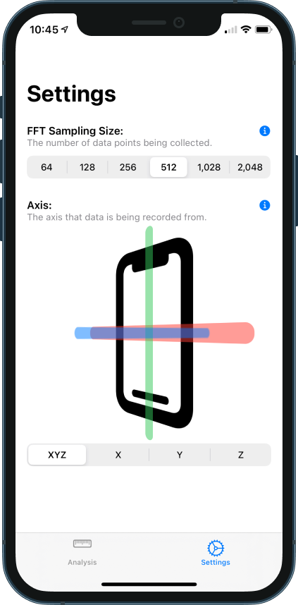
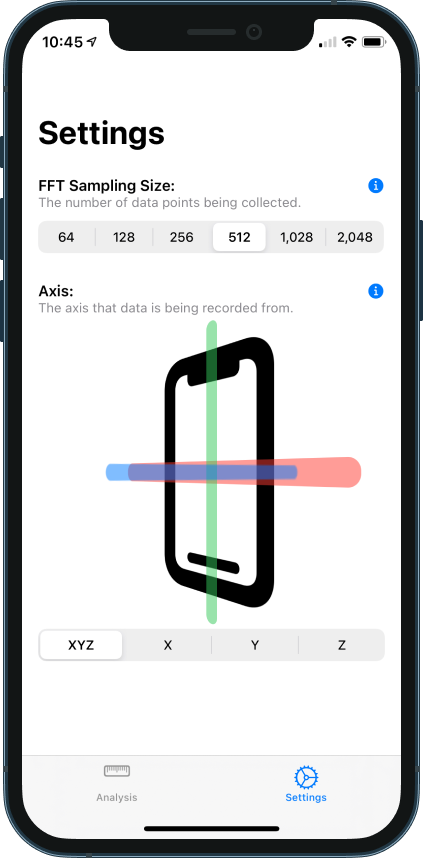

Tremor Analysis
Contact
Tremor Analysis
Contact
TremorAnalysis
 



TremorAnalysis is an app I started development on in June 2020. My father, a neurologist, had always said he was searching for an app that he could use that would measure his patients' tremor frequencies. I attempted to solve this problem by creating TremorAnalysis. TremorAnalysis utilizes Apple's Accelerate framework in order to compute the component frequency by using Fast Fourier Transform. TremorAnalysis also uses Core Motion to gather accelerometer data. I used SwiftUI as this is Apple's future framework and I would like to have a strong understanding of SwiftUI.
- Built with SwiftUI
- Utilizes Apple's Core Motion and Accelerate frameworks
- Performs a Fast Fourier Transform (FFT) to calculate component frequency of a tremor
- Published on TestFlight for beta testing